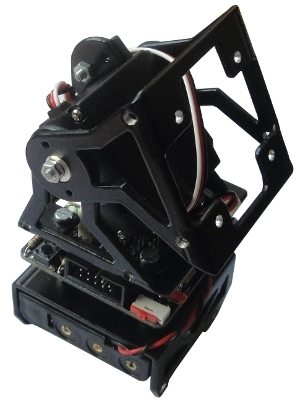
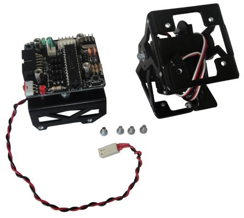

Ya están publicadas las instrucciones del montaje de Unimod B1. Es similar a Unimod A1, pero el módulo MY1 está rotado 90 grados con respecto a la Skycube. Este Unimod es la base para construir robots del grupo cabeceo-viraje, capaces de moverse en dos dimensiones.
